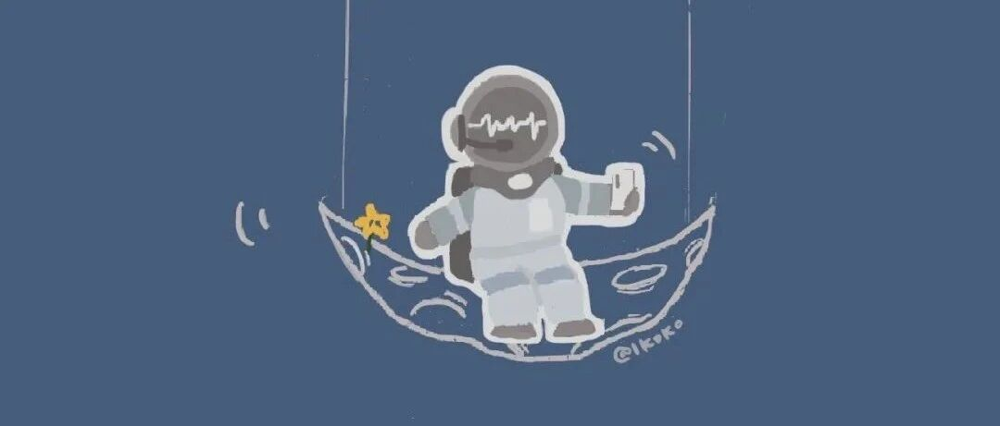

分享| 秋秋私藏，6个高质量免费电子书网站~
和 我 一 起 治 愈 生 活

图：@网络
文：@秋秋
大家好，又见面啦！我是秋秋呀~
之前跟大家说过，我7月份最重要的目标就是读书啦，为此还制定了每天的读书计划。
这个月想读的书大概如下：《战胜考试焦虑》《极简工作法则》《丰乳肥臀》和《可转债的投资理财魔法》~
2本工具书、1本小说、1本理财很完美。

(有的是电子书）
但是每次聊到读书，都有小伙伴问我好的看书app和网站，所以索性写篇文章分享一下啦~
下面这5个读书网站是我经常用的，全网高质量电子书都可以免费下，帮助很大、很实用，建议收藏。
✨1.鸠摩搜书
https://www.jiumodiary.com

这个网站非常出名，也许你早就知道了？
它的特点就是里面的书特别特别全，格式也很多。以《平凡的世界》为例，你不仅可以搜索到pdf、word格式还有 txt、mobi（适用于苹果）等等。

下载也非常方便，保存百度云就行~我遇到的链接失效的情况也很少见。

以我为例，比较喜欢用苹果自带的ibooks看书，这个软件做笔记整理啥都非常强大，颜色也比其他app配的好看~ 我就倾向下载mobi格式的书籍。
但是其他软件根本满足不了我，pdf不能自由的编辑所以我就超爱鸠摩这个网站。

*读书软件ibooks
而除了小说、工具书，其他书籍这里几乎也能搜到。量大、格式多，大家可以试一试~
✨2.书格
https://www.shuge.org/ebooks/

一个专门看古籍的网站。如果你喜欢看古籍古画或者想练字，这个网站就捡到宝贝啦~
打开的画风就古色古香，一不留神感觉自己穿越回古代，好像每一个页面也都书写着不同的历史。

要知道平时我们买一本古籍画册都非常贵，这里1500多套高质量古籍都可以免！费！下！载！还有高清版的古画，中医典籍、练字参考，自由选择，真的跟白捡钱一样。

想练字的朋友鸠推荐下载原稿、然后导入iapd临摹，比描红进步更快~
✨3.pansou盘搜
http://m.pansou.com/?mType=Group

这个就厉害了，百度网盘大家都应该知道，资料存储包~
这个就是专门搜索百度网盘里面的资料哒~所以换句话说，几乎没有你找不到的书🙈

当然，除了书籍，电视剧音乐小说文档都可以搜索，所以我真的很久就没有用过百度文库之类找资料的地方了，一个盘搜都搞定。
就是最近速度真的慢了好多~也不知道咋地了。
✨4.全国图书馆参考咨询联盟
http://www.ucdrs.superlib.net

前面说了那么多搜书的，我知道很多学生党会问，有没有免费看论文期刊的？
不光有免费看论文的，免费专业课书籍的也有哇~
我是当时写毕业论文的时候发现的这个网站，论文期刊都能免费下，会直接发送你的邮箱超方便。

想当年我还为了看论文充过钱，现在后悔没早点用起来，因为多看论文真的是大学生专业课提分神器，看的多老师都会喜欢你~
✨5.epubee小蜜蜂电子书库
http://cn.epubee.com/books/

下载畅销书神器，首页就是《三体》《如何阅读一本书》《哈佛非虚构写作课》《非暴力沟通》《精进》这些书（大多都是豆瓣高分）、省去好多你选书的烦恼。
所以你不知道读什么书的时候就很适合来这个网站~

我第一次打开的时候就开心到哭泣，一天首页的全部都下载了，就怕有一天收费了。书的格式也很齐全，表扬创始人真的太伟大了~
所以如果现在还没有明确的书单和读书目标，这个网站最适合你～
✨6.心晴网
http://www.ixinqing.com

一个专门看心理学书籍知识的网站，因为我大学学的心理学专业所以留意了一下，这个网站就只能说给力了。
里面心理学的书籍都能免费看，还有很多论文都给你整理好了：

甚至如果你不是心理学专业的，还给你按顺序标记好了先看什么书再看什么书~（不知道跨专业考研心理学的集美们知不知道这个网站？）

总之如果你对心理学有兴趣，这个网站不多说，就收藏吧~

最后，以上的网站都是宝藏，全部结合使用，不会说存在找不到书的情况。
但是！为了提高效率，我现在的看书法则也给大家分享一下~希望大家能有帮助。
我现在主要是用这三种方法来看书：
（1）微信读书——畅销书、短篇小说

微信读书是我最近唯一在用的看书app ，很适合闲暇时间阅读，用手机看也方便。适合看些畅销书还有短篇之类的~
（2）网站搜索——新奇有趣书
偶尔想看看古籍、漫画、或者新奇有趣的书，我就会选择这种方式，不仅省钱关键是还能get到很多拓展书籍~
（3）买书——长篇小说、专业书

哪怕有以上很多看书网站、app，买书依旧占据我50%读的书。
原因是看电子版书籍会翻阅过快而且有消息回复的时候难以注意力集中，所以纸质书适合周末拿出大块时间看。
我买的书一般是效率管理、长篇小说、投资理财、编导专业之类的书，需要花时间专研。

总之，就希望大家也可以早日找到适合自己的阅读方法啦！以上读书网站都非常优质，大家一定试一试哦~
其他文章推荐：

原创文章，转载请告知本人并标注来源
工作联系：17865514429 （微信）
请注明来意 :)
@微博：秋秋一日甜
喜欢记得星标，让我们一起成长